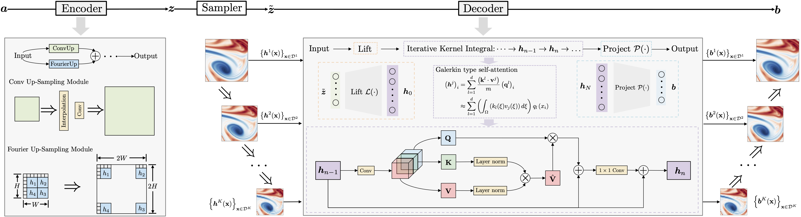
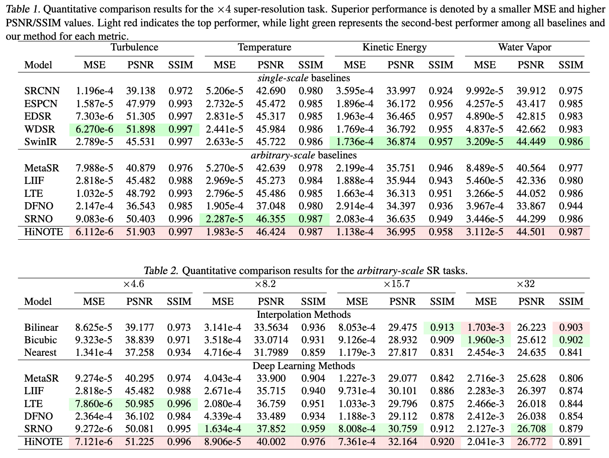
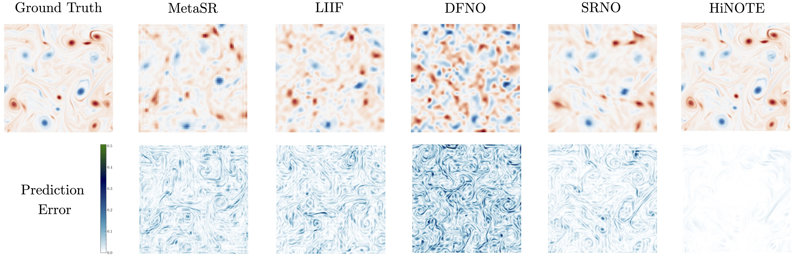
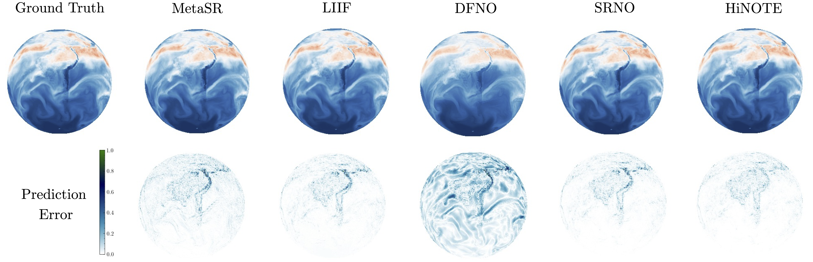
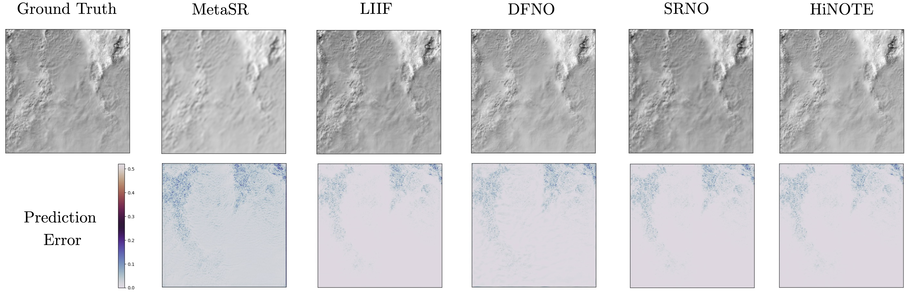
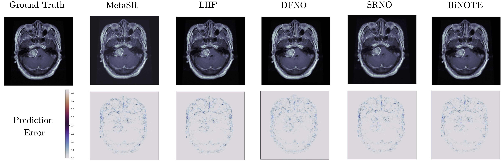

In this work, we present an arbitrary-scale super-resolution (SR) method to enhance the resolution of scientific data, which often involves complex challenges such as continuity, multi-scale physics, and the intricacies of high-frequency signals. Grounded in operator learning, the proposed method is resolution-invariant. The core of our model is a hierarchical neural operator that leverages a Galerkin-type self-attention mechanism, enabling efficient learning of mappings between function spaces. Sinc filters are used to facilitate the information transfer across different levels in the hierarchy, thereby ensuring representation equivalence in the proposed neural operator. Additionally, we introduce a learnable prior structure that is derived from the spectral resizing of the input data. This loss prior is model-agnostic and is designed to dynamically adjust the weighting of pixel contributions, thereby balancing gradients effectively across the model. We conduct extensive experiments on diverse datasets from different domains and demonstrate consistent improvements compared to strong baselines, which consist of various state-of-the-art SR methods.






@inproceedings{
luo2024hierarchical,
title={Hierarchical Neural Operator Transformer with Learnable Frequency-aware Loss Prior for Arbitrary-scale Super-resolution},
author={Xihaier Luo and Xiaoning Qian and Byung-Jun Yoon},
booktitle={Forty-first International Conference on Machine Learning},
year={2024},
url={https://openreview.net/forum?id=LhAuVPWq6q}
}